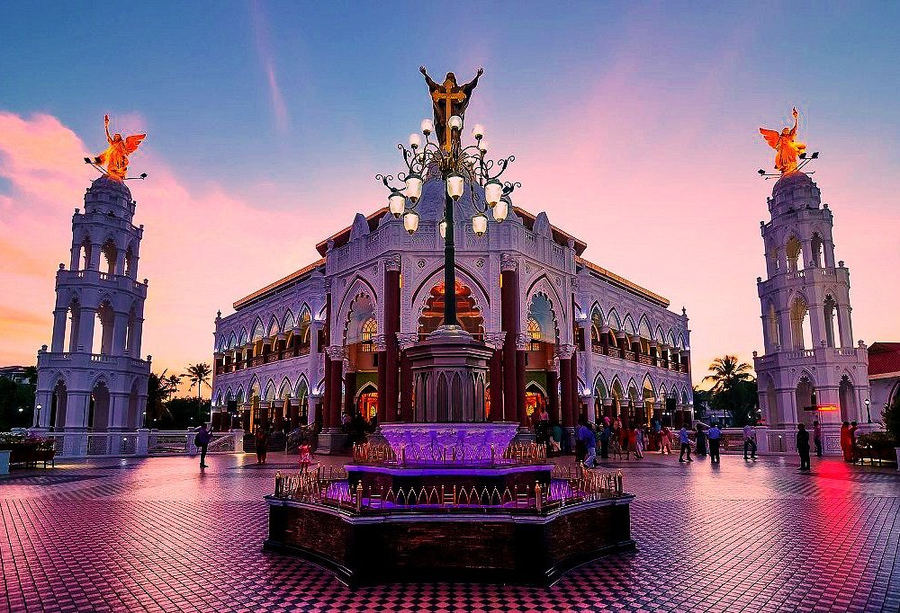

ERNAKULAM - Heart Of Kerala
1. EDAPALLY CHURCH
Asia’s largest shrine to Saint George, about five million people visit it every year. The church is thought to have been founded in 593 AD. It is regarded as one of the oldest churches in Kerala, after the seven churches founded by Thomas the Apostle in the first century AD.
Edappally, about 10 km away from the city, is famous for the St. George Forane Church, one of the oldest Roman Catholic Churches in the State. The church, popularly known as Edappally Pally, was a small structure at the time of its construction in 594 AD.
In 1080 AD, a bigger church was built adjacent to the old one to accommodate the congregation that had grown greatly in number.The church has undergone many renovations since the time of its construction. The picture of the Virgin surrounded by sculptures and angels was integrated with the altar during one such renovation. On the wall behind the altar, there is a painting of Heaven. A statue of St. George mounted on his horse, spearing the dragon, is also seen here.
The church feast is conducted in the month of April-May. Thousands of devotees participate in the festival which is a grand affair.

2. WONDERLA

The loudest, craziest, and the most amazing part of town. This simply is not just an amusement park, but a world of breath-taking charm. It’s a place to celebrate the smaller moments and share big wonders. Get on one of the 50+ exhilarating rides, or simply laze by the pool under the bright sun. But whatever you do, here, everybody gets a little closer. And that is why we are the Amazement Park.
There’s no better place to experience something new together. Make sure you check out our most thrilling attractions, our water rides, and land rides. Keep a keen eye out for timings of various other fun programs across the park – be it the next wave at the Wave Pool, or the next dance at the Rain Disco, or the next show at the Adventures of Chikku. Your visit should be a non-stop fun ride.
3. EZHATTUMUGHAM

11.8km away from the Cochin International Airport is the small but magnificent village of Ezhattumugham. It is known for its Thumboormozhi dam and oil palm plantation. This village in Ernakulam, Kerala has been promoted as a tourism vilage known as Prakriti Gramam (Nature Village).
It is also known for the hanging bridge, specially constructed to enhance the experience of entering Ezhattumugham's serene and calming parks.